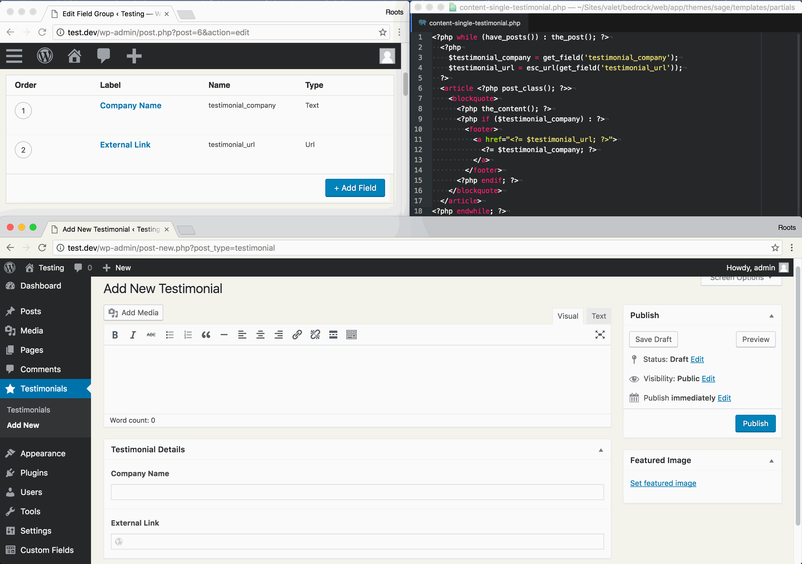
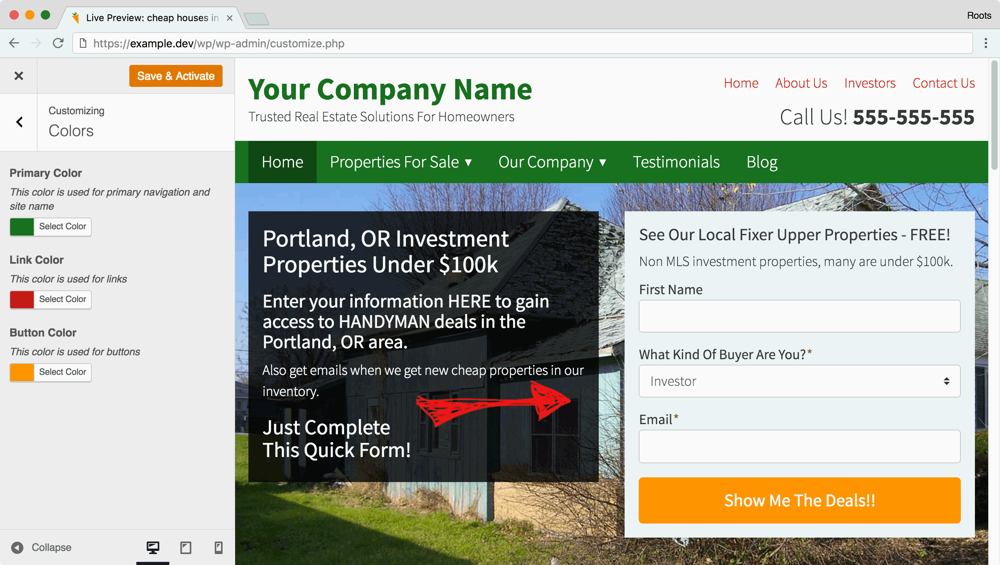

Theme customizations
Custom fields, theme options, and page builders help make a WordPress theme more easily manageable by the user.
ACF is the most widely used plugin in the WordPress ecosystem for adding custom fields, and considered to be the industry standard choice by most. ACF is what helps make WordPress a true CMS for many developers. I'm a huge fan of using Advanced Custom Fields on every client project.
I've yet to run into any kind of issues with plugin updates, or compatibility issues with other plugins. We'll go over how to save your ACF fields to JSON automatically shortly. As you update your fields in the WP admin, ACF will write them to the filesystem so that you can track fields in version control.

While WordPress + ACF is a great combination for most projects, sometimes you need to build for a difference audience. If you're building a WordPress theme that's meant for distribution, using the WordPress theme customizer is the correct way to build options into your theme. Since April 2015, WordPress.org has required theme authors to use the Customizer API for theme options.
One of the most widely used features of the WordPress customizer is giving users the ability to change colors.

WordPress also supports custom headers and custom backgrounds that are managed via the customizer.
As of the time of writing, Gutenberg is rapidly changing — the next edition of the book might expand on it.